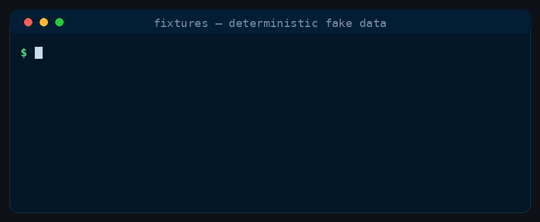

Tool
fixtures
Turns a tiny field-to-type schema into a reproducible JSON array of believable fake records.
Generate realistic, deterministic fake test data from a small JSON schema — names, emails, UUIDs, dates, ints, booleans, lorem text, and choices — emitted as a JSON array. Reach for this whenever a task needs seed rows or fixture records (unit-test data, a demo database, an API example payload) rather than hand-typing objects or pulling in a heavyweight faker dependency. Same seed always yields identical output, so the fixture can be committed and diffed. Never a slash command; use it implicitly when the intent calls for one.
What it does
fixtures reads a small JSON schema — a map of field name to type, like uuid, email, bool, int or choice — and emits a JSON array of that many fake records. It is a self-contained Python script with no dependencies beyond the standard library, and it is deterministic: the same --seed always produces byte-identical output, so a generated fixture can be committed to the repo and diff cleanly like any other source file.
It is a tool, not a command: you never type it. The crew reach for it on their own when a task needs seed rows or example records — unit-test data, a demo database, an API sample payload — instead of hand-typing objects or pulling in a heavyweight faker dependency. The data is fake and drawn independently per field, meant to exercise code paths rather than model any real-world distribution.
Examples
A few things fixtures can produce, each from a small spec of its own. If you've set prefers-reduced-motion, any animation shows its final frame instead.

In practice
What it does to a real input:
schema.json
{
"id": "uuid",
"email": "email",
"age": {"type": "int", "min": 18, "max": 65},
"role": {"type": "choice", "options": ["admin", "member"]}
}
$ python3 fixtures.py --schema schema.json --count 2 --seed 7
[
{
"id": "6513270e-269e-4d37-b2a7-4de452e6b438",
"email": "priya.patel@test.dev",
"age": 52,
"role": "admin"
},
{
"id": "e8e25d94-0ed9-4475-9531-985d5d9dc9f8",
"email": "ivan.haddad@example.com",
"age": 23,
"role": "member"
}
]How the crew reach for it
Tools are opt-in. Add it at install time with shipmates install --harness <name> --with-tools fixtures, or omit the flag and pick it from the interactive list. Once installed it sits alongside the crew as a capability they invoke implicitly; there is no slash command to type.
The script and its instructions are bundled together, so wherever the tool lands the agent has both the fixtures.py generator and the schema format it needs to drive it. Run it as python3 fixtures.py --schema schema.json --count 5 --seed 7 --out data.json, or omit --out to write the array to stdout.
Reference
- Name
fixtures- Description
- Generate realistic, deterministic fake test data from a small JSON schema — names, emails, UUIDs, dates, ints, booleans, lorem text, and choices — emitted as a JSON array. Reach for this whenever a task needs seed rows or fixture records (unit-test data, a demo database, an API example payload) rather than hand-typing objects or pulling in a heavyweight faker dependency. Same seed always yields identical output, so the fixture can be committed and diffed. Never a slash command; use it implicitly when the intent calls for one.
- Bundled files
fixtures.py- Install
shipmates install --harness <name> --with-tools fixtures
Where this lives
This page is generated from toolbox/fixtures/tool.md. Opt in at install with --with-tools fixtures and the installer copies the tool — instructions and bundled files — into the harness's skills tree.